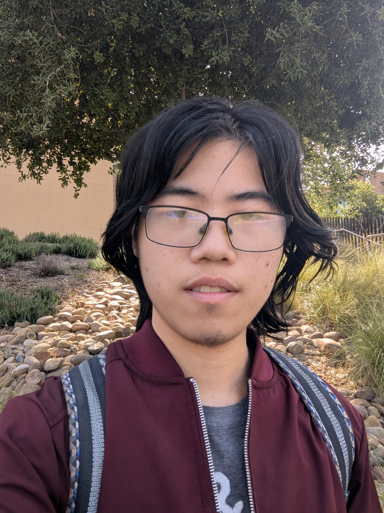

Matthew Cao
Student at UCR

📖 Education
- B.S. Computer Science - University of California, Riverside (2023-2027)
- High School Diploma - Amador Valley High School (2019-2023)
💻 Selected Projects
-
Programmer - GUI Chess Game (2024)
- Collaborated with project team to create GUI chess game that allows players to drag and drop pieces
- Fully implemented GUI interface with GTK/gtkmm, including game and menu screens, navigation, and drag-and-drop
-
Student Developer - PTSO Website (2025)
- Worked with ACM Spark team using React to implement website design with text, visuals, and animations
- Created display for board of directors, about page, values menu, and flip card animations; fixed bugs
👍 Skills
- Programming Languages:
- C++
- Java
- Python
- HTML/CSS
- JavaScript
- SQL
- Tools and Technologies:
- Git
- React
- Node.js
- Jupyter
- Unity
- Valgrind
🔍 Subject Interests
Machine Learning: I have contributed to a number of machine learning and data science projects over the years,
including the start of a research project to use topic modeling to identify common issues discussed on my university subreddit.
I have also participated in a summer research program where my team and I developed a tool for detecting bots on social media.
Game Development: I have used previous course projects, both CS-related and not, as an opportunity to create a game,
and I was involved in a project in the Gamespawn club during my first year at UCR.
Link to learn more about what I like to read/write